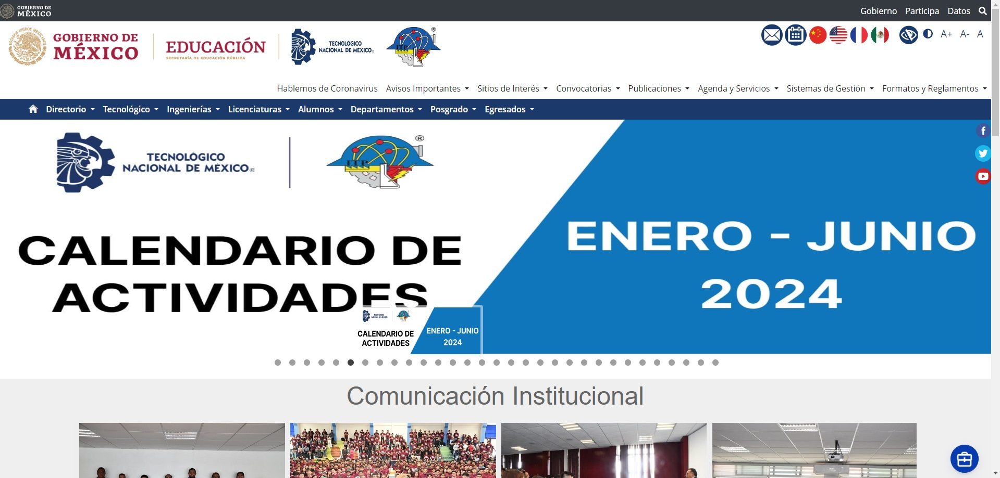
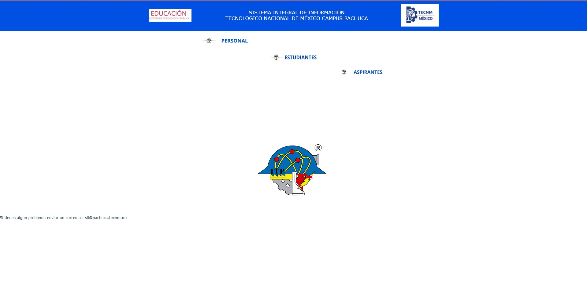
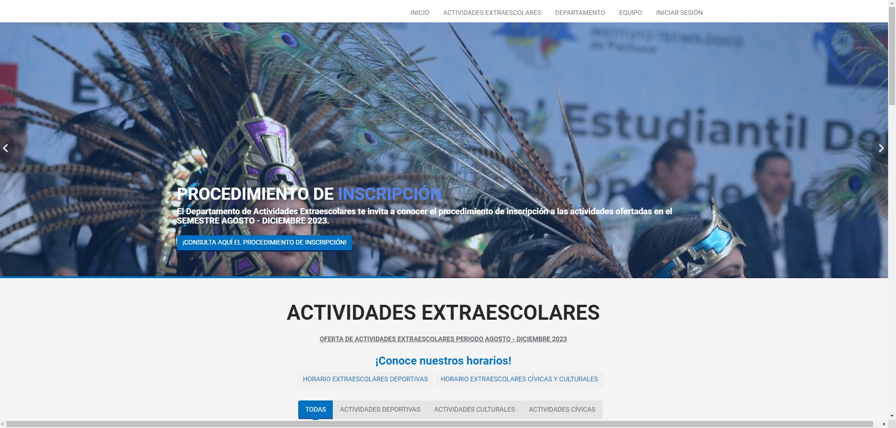
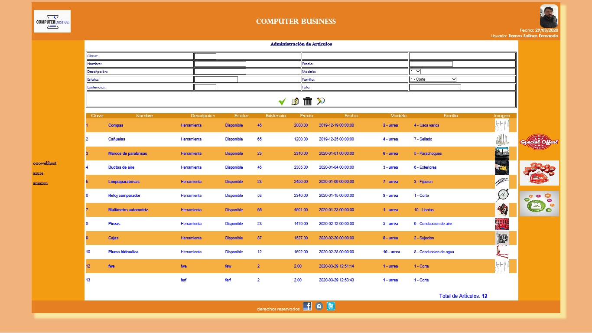

| He desarrollado el Portal Institucional del Instituto Tecnológico de Pachuca, siguiendo la estructura general de los tecnológicos nacionales de México.
He incorporado diversos estilos y scripts utilizando tecnologías como HTML 5, Bootstrap, PHP y MySQL. Actualmente,
la página aún conserva mi código en su totalidad.
Portal del ITP |
 |
| Sii (Sistema Integral De Información), apoye en el desarrollo del modulo donde los alumnos obtenía un pdf con un numero de
referencia para realizar su pago de reinscripción,
implementado tecnologías como HTML 5, Bootstrap, PHP, Java, JavaScript y Sybase.
Sii (Sistema Integral De Información) ITP |
 |
| SIAE (Actividades Extraescolares) apoye en el desarrollo del portal donde los alumnos seleccionaban y podían visualizar los horarios
disponibles para poder inscribirse a su actividad extraescolar implementado
tecnologías como HTML 5, Bootstrap, PHP, Java, JavaScript y MySQL.
SIAE (Actividades Extraescolares) ITP |
 |
| MujereSOS (Botón de pánico (APP)) En el Institucional del Instituto Tecnológico de Pachuca, Desarrolle esta aplicación para la materia de taller de investigación dos,
la cual consistía en un botón de pánico móvil dirigida hacia las mujeres donde al momento de accionar compartía su
ubicación con los usuarios cercanos que contaban con la aplicación, en esta aplicación aplique tecnológicas como Java,
JavaScript y como base de datos utilice a firebase de Google.
MujereSOS.apk |
|
| Practica de Administrador de Artículos, En el Institucional del Instituto Tecnológico de Pachuca
desarrolle para la materia de programación web un administrador de Artículos en el cual podías agregar,
eliminar, editar y buscar artículos mediante el modelo vista controlador para la obtención de datos en un servidor
MySQL en el cual se emplearon tecnologías como JavaScript, PHP, java y MySQL.
Proyecto Administrador de Artículos.zip |
 |